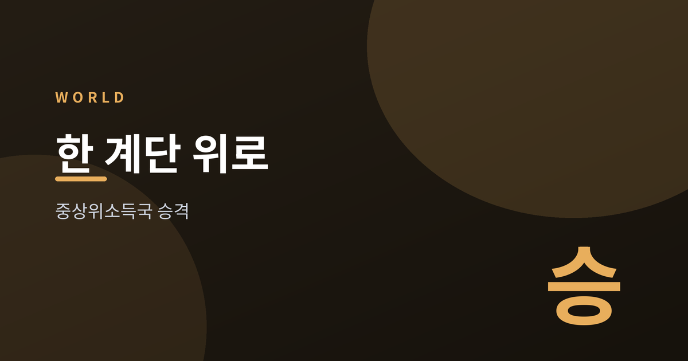
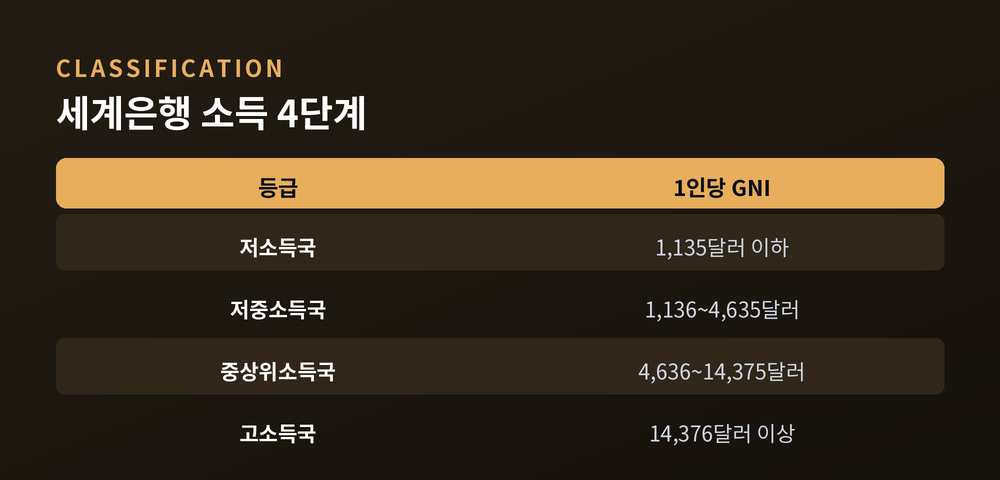
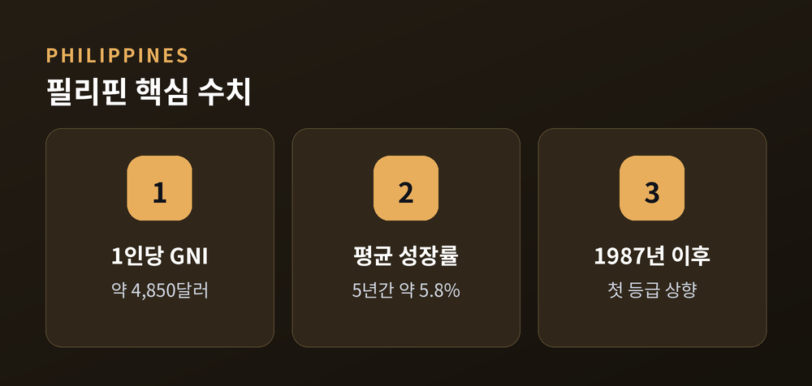
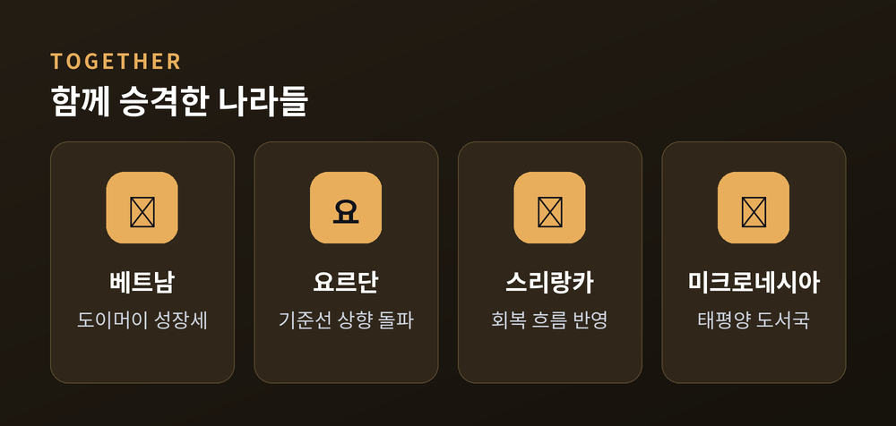
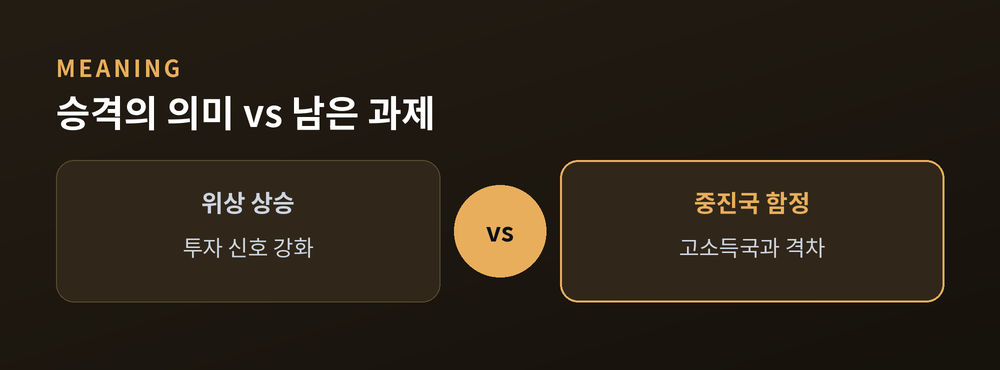

세계은행이 그은 새 이정표

세계은행이 2026년 7월 2일 국가 소득분류 개편을 발표했습니다.
필리핀이 중상위소득국으로 올라섰습니다.
1987년 이후 오래 머물던 자리에서 한 계단 위로 이동한 것입니다.
세계은행은 매년 국가별 국민총소득(GNI)을 기준으로 소득 등급을 다시 매깁니다.
2026년 7월 2일 발표에서 필리핀이 중상위소득국으로 분류됐습니다.
근거는 2025년 1인당 GNI였습니다.
약 4,850달러로, 중상위소득 기준선인 4,636달러를 넘어섰습니다.
필리핀은 1987년 이래 줄곧 저중소득국에 속해 있었습니다.
같은 발표에서 베트남과 요르단, 미크로네시아, 스리랑카도 나란히 승격했습니다.

세계은행 소득분류는 단순한 통계가 아닙니다.
한 나라의 발전 단계를 보여주는 상징적 이정표입니다.
필리핀의 승격 배경에는 고른 성장이 있습니다.
최근 5년 평균 GDP 성장률은 약 5.8%로 집계됐습니다.
특정 산업의 힘이 아니라 전 산업이 함께 자란 결과라는 점이 눈에 띕니다.
분류가 오르면 국가 위상이 달라집니다.
해외 투자자에게 보내는 신호가 강해집니다.
동시에 국제기구의 저리 차관 같은 우대 조건은 점차 줄어드는 방향으로 바뀝니다.

이번 승격은 필리핀 혼자만의 이야기가 아니었습니다.
아시아와 중동, 태평양의 여러 나라가 같은 흐름을 탔습니다.
베트남은 도이머이 개방 이후 이어온 성장세를 보여줬습니다.
요르단과 스리랑카, 미크로네시아도 각자의 경로로 기준선을 넘었습니다.

승격은 반가운 소식이지만, 끝이 아니라 새로운 출발선입니다.
포춘 등 일부 매체는 곧바로 다음 관문을 짚었습니다.
이른바 중진국 함정입니다.
중상위소득 단계에서 성장 동력이 꺾이며 고소득국 문턱을 넘지 못하는 현상입니다.
1인당 소득이 아직 고소득국과 큰 격차가 있다는 점도 냉정히 봐야 합니다.
분배와 불평등, 내수 기반 강화 같은 숙제도 함께 남습니다.
한 계단을 올랐다는 사실과, 그 위에 더 가파른 길이 있다는 사실은 함께 성립합니다.

정리하면, 필리핀의 중상위소득국 승격은 40년 가까이 이어온 흐름의 전환점입니다.
베트남 등 여러 나라가 함께 오른 점도 의미가 큽니다.
다만 상징적 이정표를 지난 만큼, 다음 단계의 과제도 분명해졌습니다.